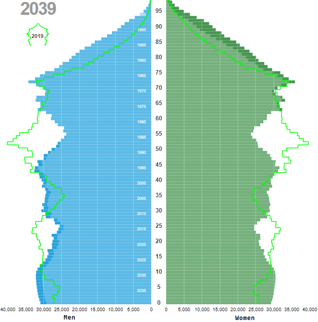

1 Introduction
This chapter describes type 2 diabetes (T2D) and how migrants are at particular risk. It then outlines the context of migration and health care in Denmark and summarizes clinical guideline recommendations and how they relate to the needs of migrants with T2D. Finally, it introduces the reader to identification of diabetes patients in Danish healthcare registers as a means to providing knowledge on potential disparities in T2D care between migrants and native Danes.
1.1 Migrants and type 2 diabetes
T2D constitutes the vast majority of all diabetes cases, and disproportionally affects the socially deprived demographics in societies across the globe.1 Today, the prevalence of type 2 diabetes (T2D) exceeds half a billion people globally and is on the rise due to several factors, including population ageing, urbanization, adoption of energy-dense diets, and sedentary lifestyles. These transitions are occurring at a rapid pace in developing countries, where they affect the largest number of people. Furthermore, many developing countries have populations with a genetic predisposition to developing T2D, which exacerbates the impact of these transitions.2
After being granted residence permit in Denmark and other developed nations, migrants are often housed in densely-populated urban areas and are exposed to drastic lifestyle transitions. Migrants may also suffer from previous mental and physical trauma, which - in addition to cultural and language barriers - can limit their ability to gain higher-income employment and escape their disadvantageous socioeconomic position.3 This leaves migrants particularly vulnerable to T2D, as they are positioned at the point of convergence of these exposures: genetic predisposition, rapid lifestyle transitions, and the disparate social impact of T2D.
In Denmark and many other developed nations, healthcare systems are facing a challenge to sustain the expected high quality of care in an ageing population with a growing burden of chronic diseases and comorbidities.4,5 Prioritisation of limited resources is crucial to ensure that those with the highest need for (and potential benefit from) healthcare receive adequate care. Migrant origin is a well-established risk factor of T2D, and migrants have a higher prevalence of T2D compared to native populations today, but the increased risk of developing T2D is partially mitigated by their younger age.6,7 However, this only delays the impact of their increased T2D risk. As these migrant populations age in the coming years, they will make up a growing proportion of T2D patients in the country. In 2019, 9% of immigrants in Denmark were aged 66 years and above, a proportion projected to have doubled by 2039.8 Therefore, understanding potential disparities in care and the specific healthcare needs of migrant populations with T2D can inform the prioritisation of healthcare resources, ultimately ensuring that all individuals with T2D can continue to receive appropriate care.
Currently, there is a lack of evidence on T2D care in migrants, and research in this area faces several challenges that may explain the scarcity of evidence. Not only are migrants a minority, which limits the size of potential study populations, they are often a hard-to-reach group in studies that require patient engagement for inclusion, which exacerbates sample size problems and can induce selection bias.9 Furthermore, migrants have historically been defined by their racial appearance and ethnic minorities categorised accordingly, particularly in Europe and the United States. While these categories allow researchers to identify racial minorities, they obscure the role of migrants in the modern era, and provide only indirect evidence on migrant minority groups.10
1.2 Migrants in Denmark
In 2019, Denmark had a population of approximately 5.8 million residents, of whom 600,000 (10%) were migrants and 1 million (18%) were aged 66 years and older. By 2039, the population is expected to have grown to 6.2 million, with a migrant population of 750,000 (12%) and 1.5 million individuals (23%) aged 66 years and older. Figure 1.1 shows the projected demographics of native Danes and migrants in 2039 (2019 demographics outlined in light green (adapted from Statistics Denmark).8


1.2.1 Migration
Individuals migrate between countries for various reasons, such as the pursuit of work, education and family reunification, or to seek protection. Due to different international rights, a clear legal distinction is made between ‘refugees’ and ‘migrants’. Refugees are defined by the United Nations High Commissioner for Refugees and protected under international law:
Refugees are persons who are outside their country of origin for reasons of feared persecution, conflict, generalized violence, or other circumstances that have seriously disturbed public order and, as a result, require international protection.11
By contrast, there is no formal legal definition of an international migrant, although anyone changing country of usual residence, irrespective of the reason for migration or legal status, is generally considered a migrant.11
In Denmark, applications from migrants seeking protection are processed by authorities to determine if they quality for refugee status, and whether they have previously applied for asylum elsewhere in the European Union under the Dublin Regulation.12 Individuals eligible for refugee status are granted asylum and a residence permit. Conversely, individuals with immediate family members holding Danish citizenship (or a residence permit granted for other reasons than refugee status) can apply for a residence permit on grounds of family reunification before entering the country.13 Residence permits can also be granted to citizens of the European Union, and to individuals with work or study obligations in Denmark.14,15 Citizens of Finland, Iceland, Norway and Sweden are free to enter, reside and work in Denmark.16
Once residence has been granted, regardless of the reason, an individual has access to the same public healthcare services as a Danish citizen. In addition, any patient in the public healthcare system who is deemed in need of interpreting assistance (by the treating physician) has a right to a professional interpreter. The public healthcare system covers the initial cost of the interpreter services, but since 2018, the regional public healthcare administrations have been obliged by law to charge a fee from patients with more than three years of residence.17
1.2.2 Migrants in the Danish data infrastructure
In this PhD project, refugees and immigrants are referred to collectively as migrants after obtaining residence. The automated, prospective collection of register data in Denmark is challenged by the missing data on migrants and their past.
Basic civil registration data on migrants is collected during processing of residence applications. Generally, registrations pertaining to events that occurred in another country prior to immigration require technical evidence (e.g. clinical imaging to determine age and verify date of birth) or legal proof from the issuing authority of the country where the event occurred. However, in cases where such documentation is unavailable, registrations may be supported by undocumented information provided by the migrant.18 In cases where information was not systematically collected at the time of migration (e.g. an individual’s level of education attained before migration), surveys have been used to collect this data retrospectively, or it may be imputed based on available data.19
1.2.3 Migrant groups in Denmark
In Danish civil register data, a migrant’s country of origin is defined by Statistics Denmark according to the following rules (paraphrased):
An immigrant is a person born abroad to non-Danish citizens. If Danish civil records contain data on a migrant’s mother, country of origin is defined by the mother’s country of birth. Otherwise, the father’s country of birth is used, or - if no data is available - country of origin is defined by the country of birth of the immigrant themselves.20
Migrants from more than 200 different countries of origin reside in Denmark, which makes the migrant group very heterogenous with respect to geographic and cultural background.20 Furthermore, the context of migration differs greatly between migrants of different origins in terms of when and why a particular minority migrated to Denmark. For example, the vast majority of migrants from Turkey were granted residence due to work and family reunification in the 1960s and 1970s, while almost all migrants from Bosnia-Herzegovina were refugees from the Yugoslav wars of the 1990s. By contrast, migrants from other European countries came to Denmark mainly for work, education or other reasons at various points in time.20 Figure 1.2 shows the primary reason for migration among the largest migrant groups in Denmark (adapted from Statistics Denmark).21


The limited size of each ethnic minority and the strongly contrasting characteristics between them poses a challenge to statistical processing. Minority categories should be clinically meaningful, and researchers must balance the need for aggregation to achieve adequate sample sizes against the risk of introducing biases due to aggregation of dissimilar groups.22 For statistical purposes, different geoschemes have been used by different institutions depending on the context and purpose. The Statistical Division of the United Nations developed the M49 Standard Country or Area Codes for Statistical Use,23 whereas Statistics Denmark group migrants into Western and Non-western countries, respectively, using a grouping scheme that resembles the more widely-used classification of developed and developing countries.24 See Chapter 3 for a description of grouping of countries of origin in the context of this PhD project.
1.2.4 Descendants
Descendants of migrants pose an additional challenge to classification for research purposes, as they can be considered part of the migrant group, the native population, or their own distinct category. In the context of T2D today, descendants of migrants in Denmark are a very young group unlikely to constitute a substantial proportion of the patient population (less than 1% of descendants are aged 66 years or older).8 Some evidence from Sweden suggests that descendants are a distinct group from first-generation immigrants in terms of T2D and mortality.25 In the context of this PhD project, descendants were not a focus of investigation, and the term migrants specifically refers to first-generation migrants.
1.3 Type 2 diabetes care
1.3.1 Complications and risk factors
1.3.1.1 Overall
Complications of diabetes are traditionally divided into macrovascular (e.g. cardiovascular disease (CVD)) and microvascular complications (e.g. kidney disease, retinopathy, neuropathy), all of which contribute to morbidity and mortality in T2D. Several lifestyle and physiological factors influence the risk of developing complications, and clinical care revolves around management of these. In addition to being key risk factors of complications, blood pressure and levels of haemoglobin-A1C (HbA1c) and low-density lipoprotein cholesterol (LDL-C) drive indications for treatment and clinical decision-making in T2D.26
1.3.1.2 In migrants
In Denmark and several other European countries, HbA1c levels are higher in migrants than in native populations,27–32 but LDL-C levels have only been sparsely described.33 The evidence on complication risk is inconsistent, but there is some indication that the risk is higher in migrants compared to native populations, although the risks differ between complication types, migrant groups and countries. Similarly, some studies have reported higher mortality among migrants with diabetes,7,34 whereas other studies have found similar or lower risk.35
1.3.2 Pharmacological treatment
1.3.2.1 Overall
Due to their effects on HbA1c, LDL-C and blood pressure, glucose-lowering drugs (GLD), lipid-lowering drugs (LLD) and antihypertensive drugs are critical parts of T2D care. In T2D patients with particularly high risk of complications, pharmacological treatment also includes antiplatelet therapy (APT).36,37 In addition to their effect on biomarker levels, certain types of the above classes of drugs have other positive effects. In particular, the GLDs sodium glucose co-transporter type 2 inhibitors (SGLT2i) and glucagon-like peptide-1 receptor agonists (GLP1RA) substantially reduce the risk of adverse cardiovascular and renal events beyond their effect on HbA1c. Similarly, the antihypertensive drugs angiotensin-converting enzyme-inhibitors (ACEI) and angiotensin receptor blockers (ARB) reduce the risk and improve the prognosis of diabetic kidney disease (DKD) beyond their effect on blood pressure.38
Combination therapy - the use of multiple drug types with differing mechanisms of action - is a way to increase treatment intensity and achieve treatment goals with fewer side-effects. Combination therapy is particularly important in T2D because GLD monotherapy fails to achieve target levels of HbA1c in many patients, even at maximal dosage.39,40
1.3.2.2 In migrants
Evidence from several European countries shows that GLDs are prescribed earlier and/or to a larger proportion of migrants compared to native populations.29,31 However, disparities in the quality of the prescribed GLD treatment, such as the use of combination therapy or the types of GLD prescribed, have not been studied. Indirect evidence suggests that such disparities are likely, as non-white minorities in the UK were found to be slower and less likely to intensify to combination therapy than white groups.41 Likewise, migrants in Italy with T2D have been reported to purchase fewer packages of non-insulin GLDs per person-year than their native counterparts.42 Moreover, socioeconomic and racial disparities in prescribing of SGLT2i and GLP1RA have been reported in several countries.32,43–47
In contrast, studies from European countries have reported lower prescription rates of LLDs in migrants with T2D.29,33,48 However, treatment with LLD is not indicated in all patients with T2D, and only a few of these studies accounted for treatment indication.
Evidence on ACEI/ARB use and APT in migrants with T2D is very limited. A study from Italy found lower odds of treatment in most migrant groups,49 indicating a potential for disparities in these areas of care.
1.3.3 Monitoring
1.3.3.1 Overall
In T2D, timely monitoring of risk factors and complications allows faster adjustment of treatment, and monitoring has previously been used as a process indicator of care quality, although the direct evidence on its influence on outcomes is sparse.50,51
1.3.3.2 In migrants
The evidence on monitoring of T2D in migrants is inconsistent between countries and different aspects of monitoring. In Norway, migrants with T2D received similar or more monitoring than native Norwegians,29 while migrants with T2D in Italy received fewer referrals for consultations than native Italians.42
1.4 Clinical guidelines for type 2 diabetes care
1.4.1 Context
In Denmark, T2D care is most often provided by general practitioners (GPs) and other actors in the primary care sector, although some patients are treated in the outpatient hospital setting. The Danish College of General Practitioners publishes national clinical guidelines for T2D in cooperation with the Danish Endocrine Society as well as separate guidelines for pharmacological treatment. Although these guidelines advise that monitoring intervals, biomarker goals and treatment intensity are adapted to fit the individual patient, they do provide specific recommendations that may be used as indicators of care quality.
1.4.1.1 Migrants in guidelines
The Danish guidelines for T2D contain a chapter on vulnerable populations. This chapter includes a section on cultural and language barriers. Here, the special challenges facing migrants in T2D are noted: high prevalence and early onset of disease, poor metabolic control and early onset of complications. The guidelines recommend the use of a professional interpreter when facing language barriers, but specific recommendations on care are not provided. An appendix on ethnic minorities further notes how diabetes-friendly diet and physical exercise can be particularly challenging in these groups, but does not provide recommendations for specific care, except on accomodation of insulin-therapy during religious fasting. In the guidelines on pharmacological treatment of T2D, migrants are not addressed in the main contents, nor in the appendix on treatment of special groups.52
The sparse recommendations on clinical management of migrants with T2D are not unique to Denmark, however, as guidelines in nearby countries are similarly lacking:
Sweden: Besides stating the need for providing care regardless of ethnicity or other personal and sociodemographic characteristics, the Swedish guidelines do not mention migrants at all.53
Germany: Ethnicity is noted as one of several contextual factors that may influence morbidity in T2D, but migrants or ethnic minorities are not mentioned otherwise.54
The Netherlands: The Dutch guidelines recommend increased screening for T2D in individuals of Hindustani, Turkish, Moroccan or Surinamese origin. The guidelines state that provision of diabetes care in these groups should be similar to that in the native Dutch population. No specific recommendations on care in migrants are provided, although it is noted that some treatment options appear to be less effective in these groups (lifestyle interventions, bariatric surgery).55
The United Kingdom: The UK guidelines advise that BMI thresholds for obesity be adjusted in ethnic minorities, and an increased risk of complications in some ethnic groups is noted. No specific recommendations for clinical management of migrants are made. Citing a lack of evidence on ethnicity-specific effects of pharmacological treatment, the guidelines recommend research into the effectiveness of SGLT2i in different ethnic groups.56
Norway: The special needs of migrants are recognized in the Norwegian guidelines, and a reference group on migrants and diabetes was established among the authors. However, the topic did not receive a separate guideline chapter (the only topic not to do so among all the 13 guideline topics), and the recommendations specific to migrants are limited to more liberal screening for diabetes, use of a professional interpreter, and attention to diet and religious fasting.57
1.4.1.2 Historical revisions
The Danish guidelines for type 2 diabetes care have existed for several decades, but a strictly evidence-based format was first introduced in the 2004 revision. This edition included a chapter on T2D in migrants, which recommended the use of a professional interpreter when encountering language barriers and noted a high prevalence and early incidence of T2D in migrants from third-world countries. Notably, this separate chapter on migrants was not included in revisions after 2004.58
The guidelines are continuously updated as new evidence emerges. In this PhD project, T2D care was studied in the time period covered by the 201259 and 201960 revisions. These revisions brought minimal changes to the recommendations relevant to this PhD project, as they were largely unchanged from 2004 until the time period of the studies of T2D care in this dissertation. These recommendations are described below as they appeared in the prevailing guidelines at the time, with highlights of any mentioning of migrants.
Some readers will note that parts of the recommendations on pharmacological treatment have been rendered obsolete by newer evidence (e.g. recommendations for SGLT2i and GLP1RA were expanded to include all T2D patients with CVD, multiple risk factors for CVD or chronic kidney disease, irrespective of HbA1c level in the 2022 revision).
1.4.2 Diagnosis
HbA1c is the main diagnostic standard, with values \(\ge48 mmol/mol\) being diagnostic of type 2 diabetes, although diagnosis must be confirmed with a repeated sample on a different day, unless symptoms of diabetes are present. HbA1c is not suitable for diagnosis of T2D in certain groups, e.g. pregnant women and individuals with haemoglobinopathy. Once diagnosed, patients with T2D should be considered to be permanently affected by the disease, and the associated risk factors for complications should be treated regardless of subsequent normalisation of HbA1c.
The guidelines mention ethnicity as a risk factor for T2D, and recommend considering HbA1c screening in migrants from Asia, Africa and the Middle East, depending on age and other risk factors.
1.4.3 Monitoring
The risk biomarkers HbA1c and LDL-C should be measured at least once a year along with urine albumin-to-creatinine ratio (UACR) to screen for DKD (repeated samples of UACR \(\ge 300mg/g\) is considering diagnostic of diabetic kidney disease (DKD)). Diabetic retinopathy should be screened by an ophthalmologist every second year, although ophthalmologists can adapt flexible intervals, depending on individual retinopathy status and other risk factors.61 Similarly, screening for diabetic foot disease should be performed by a podiatrist every year or, alternatively, by the GP if podiatrist service is not feasible for the patient. At the initial diagnosis of T2D, a baseline-screening of all five types of monitoring is recommended.
The guidelines provide no specific recommendations on monitoring in migrants.
1.4.4 Biomarker levels
For HbA1c, the goal should be the lowest possible level without hypoglycaemia or inappropriate polypharmacy. Specific targets at \(48 mmol/mol\), \(53 mmol/mol\), \(58 mmol/mol\), and \(70 mmol/mol\) are provided depending on diabetes duration and severity, complications, age and comorbidities.
For LDL-C, the level should be as low as possible. A general target below \(2.6mmol/L\) is provided, while the target in patients with complications should be below \(1.8mmol/L\).
The guidelines provide no specific recommendations on HbA1c or LDL-C targets in migrants.
1.4.5 Pharmacological treatment
1.4.5.1 Glucose-lowering drugs
Combination therapy: GLD therapy is recommended in patients with HbA1c ≥ 48 mmol/mol, and metformin is the recommended first-line treatment. There is no overall recommendation of second- or third-line drugs, although SGLT2i or GLP1RA should be considered in patients with CVD when metformin or other treatment is insufficient to reach the patient’s HbA1c target.
Individual drug types: The guidelines do not present a fixed hierarchy between GLD drug type, but recommend factoring in all effects, positive and negative, as well as cost when choosing between individual drug types.
1.4.5.2 Lipid-lowering drugs
Treatment with LLD is recommended to all individuals with prevalent CVD, diabetic nephropathy or LDL-C above 2.5 mmol/L.
1.4.5.3 Antihypertensive drugs
In addition to treatment of hypertension, use of either ACEI or ARB is recommended in individuals with prevalent CVD, microalbuminuria, or diabetic kidney disease.
1.4.5.4 Antiplatelet therapy
APT is recommended in individuals with prevalent CVD, diabetic kidney disease or very high risk of CVD due to other risk factors.
The guidelines provide no specific recommendations on any aspect of pharmacological treatment in migrants.
1.5 Identification of type 2 diabetes cases in healthcare registers
1.5.1 Danish register data infrastructure
Several types of individual-level data (e.g. civil registration, public healthcare contacts, and drug prescriptions) are automatically collected on all residents in Denmark and stored in nationwide Danish registers by Statistics Denmark and the Danish Health Data Authority (see Chapter 3 for details on contents of registers). These agencies are legally allowed to share the register data for research purposes, thus creating a set of common data sources shared by researchers with access to the data. Any researcher associated with an approved Danish research institute (mainly Danish universities) can apply for access, but fees and conditions apply.
Register data is generally accessed and processed by approved researchers on remote servers operated by Statistics Denmark and the Danish Health Data Authority, and all researchers can potentially access the same raw data, which are stored in the same structure, unless altered by the researcher (or their data manager). The identical raw data and the common virtual working environment potentially enables reproducible research. This means that any data processing workflow should be transferable between research projects if the underlying code is designed with reproducibility in mind and the code is shared (“open-sourced”).62 While reproducibility in research relates to transparent reporting of methods to enable others to reproduce analyses and experiments, this also applies to a diabetes classification program, which - if reproducible - could be reused by any researcher with access to the necessary register data to dynamically identify a study population of individuals with diabetes for their research needs.63
1.5.2 Benefits
Healthcare registers provide a powerful data source for population-wide studies without the need to engage the patient for inclusion. The possibility to include all individuals in the population makes them particularly suited for studies of migrants with T2D, where sample size is a limiting factor, and other data sources may be vulnerable to selection bias in these groups.
1.5.3 Challenges
General-purpose registers and other administrative databases often provide the basis of diabetes epidemiology, but they rarely contain validated diabetes-specific data. If the diabetes-specific data is not accurate, bias may be induced into studies. Thus, it is important to have an accurate tool to identify individuals with diabetes in the registers, as findings may differ with various diabetes definitions.64,65 Considerable efforts have been made towards establishing such a tool for diabetes research in several countries, including Denmark.66–68
Internationally, some algorithms classifying T1D and T2D have been validated in cohorts of individuals with diabetes,69–73 but none have been validated in a general population. In a general population, classification algorithms (classifiers) must not only discern type 1 diabetes (T1D) from T2D, but it must also identify diabetes while accounting for events that might lead to inclusion of non-cases, such as the use of GLD in the treatment of other conditions. Currently, no type-specific diabetes classifier has been validated in a general population, which leaves register-based studies in this area vulnerable to biases.
1.5.4 Register-based diabetes classifiers
In Denmark, the first resource readily available to researchers to identify diabetes cases through register data was the National Diabetes Register, which was established in 2006.74 The National Diabetes Register was discontinued in 2012, and a later validation study questioned its validity and called for future registers to adopt inclusion based on elevated HbA1c levels.75
Launched in 2014, the Register of Selected Chronic Diseases (RSCD) is currently the only publicly available resource to identify diabetes cases through Danish register data (by application to the Danish Health Data Authority), but the RSCD has not been publicly validated, and the source code behind the algorithm has not been made publicly available. Notably, the algorithm lacks inclusion based on elevated HbA1c levels.76
Since the launch of the RSCD, nationwide laboratory data on HbA1c testing has become available in the Danish register ecosystem,77 but this data is yet to be incorporated into available diabetes classifiers.
1.6 Introduction at a glance
T2D is a disease that carries serious risks, but several treatment options are available to control the risk factors in T2D and to reduce the risk of complications and death. In an ageing population, the burden of T2D on healthcare services is rising, and resources must be prioritised to those with higher needs to ensure adequate care.
Migrants are particularly vulnerable to T2D, as they have an increased prevalence of the disease compared to native Danes. Despite having higher HbA1c levels than their native counterparts, the evidence on complication risk and mortality in migrants is inconsistent, but some evidence suggests a higher risk. Evidence on care disparities that may contribute to this excess risk in migrants is limited. Additionally, research in this area faces several challenges, such as limited sample sizes and migrants being hard-to-reach for intervention and survey studies. Register-based studies are well-suited to handle these limitations, but no validated method currently exists to identify T2D cases in a general population, which leaves register-based studies in this area vulnerable to biases.
In Denmark, clinical guidelines are available to direct clinicians and patients towards the best possible outcomes. Despite the special challenges faced by migrants, the current guidelines do not contain specific recommendations for T2D care in migrants, and the evidence on care disparities between migrants and native Danes is limited.